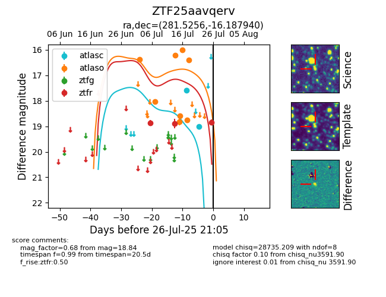

Target ZTF25aavqerv at 2025-07-26 21:05, see:
FINK: fink-portal.org/ZTF25aavqerv
Lasair: lasair-ztf.lsst.ac.uk/objects/ZTF25aavqerv
ALeRCE: alerce.online/object/ZTF25aavqerv
alt names
ZTF25aavqerv (ztf,fink)
coordinates:
equatorial (ra, dec) = (281.5256,-16.18794)
galactic (l, b) = (17.8731,-6.15549)
photometry
last atlasc=19.00, atlaso=16.41, ztfr=18.84
2 atlasc, 8 atlaso, 3 ztfr detections
